1995 Michael Mann Midnight Diner Noir · Tight 2-Person v2.8: Damon & Deron (Zero Crowd) · Ingredient Prep: YouTube 1995 Diner Reference Analysis + 2-Person Gold-Master 21:9 Keyframes + Continuous 2-Act Lyria 3.5 Noir Score · Render Time: 20/20 Verified Hybrid Render (18 InfiniteTalk + 2 LTX-2.5 Dev · Hostile QA PASS)
Original movie frames extracted directly from the scene to match camera angles, lenses, lighting contrast, and color palette.
Every locked 21:9 keyframe anchor, dialogue line, and motion directive queued for rendering.
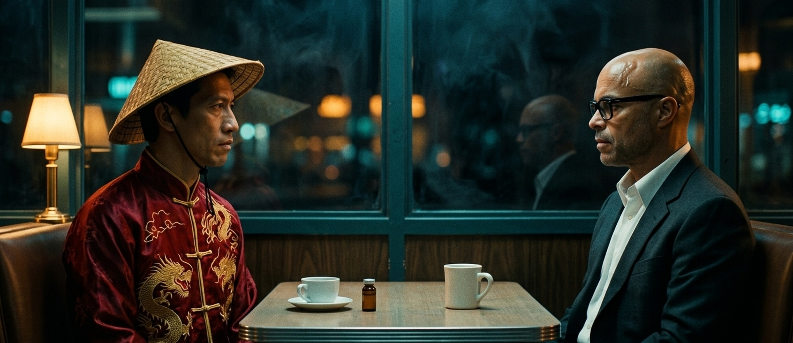
HT2_01 · fx (3.7s)
Keyframe: ht2_master_wide.jpg
Line: ""
Prompt: Photorealistic 1995 35mm gritty Los Angeles midnight diner drama matching the starting frame. Warm brass booth lamp glow contrasting with deep teal-blue midnight diner window reflections and distant out-of-focus city taillights. Set context: Gritty 1995 35mm midnight LA coffee-shop booth; Damon (charcoal tailored wool suit, open crisp white dress collar, short dark trimmed beard) seated on right across small formica diner table from Deron (canonical woven bamboo conical rice paddy hat & ornate red dragon Chinese silk robe, holding small glass Po Chai Pills vial beside white porcelain teapot & mug); warm tungsten booth lamp, dark blue-teal steel night glass reflections behind, empty quiet midnight diner booths behind them. Soft wisps of hot steam curl gently upward from the white porcelain teapot and ceramic coffee mug while Damon and Deron sit across the formica booth locked in quiet tense standoff with subtle shoulder breathing and natural eye blinks. Use a steady locked-off cinema camera mounted on a heavy studio tripod with grounded framing. Crisp 35mm film grain and authentic skin texture.
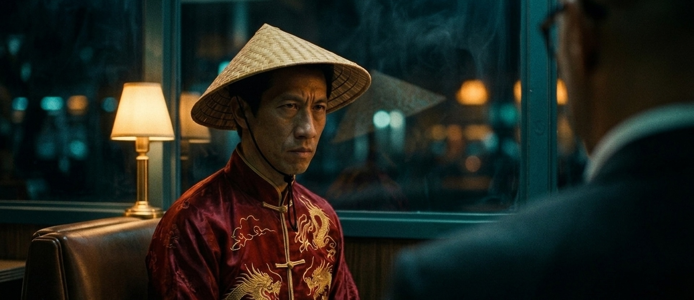
HT2_02 · deron (infinitetalk)
Keyframe: ht2_deron_ots.jpg
Line: "Armored truck outside San Gabriel dim sum plaza... clean job, Damon. Zero fingerprints! So why professional crew leave half-million cash sitting in getaway van lah?"
Prompt: Photorealistic 1995 35mm gritty Los Angeles midnight diner drama matching the starting frame. Warm amber tungsten booth lamp and deep teal-black midnight glass reflections. Set context: Shallow f/2.2 OTS past Damon's dark charcoal suit shoulder on right onto Deron on left wearing woven bamboo conical hat & red dragon silk robe leaning toward coffee mug. Use subtle organic 35mm handheld camera breathing with gentle operator micro-movements while maintaining framing distance. Exact hair, bamboo hat, glasses, wardrobe, teapot, vial, and lighting preserved from the starting frame. ONLY the middle-aged East Asian man on the left side wearing a woven bamboo conical rice paddy hat and crimson gold-dragon embroidered Chinese silk robe actively speaks with natural expressive jaw and lip articulation synced cleanly to the dialogue: "Armored truck outside San Gabriel dim sum plaza... clean job, Damon. Zero fingerprints! So why professional crew leave half-million cash sitting in getaway van lah?", leaning slightly forward across the booth with focused detective intensity, measured micro-head tilts on stressed accusations, and sharp rhythmic eyebrow emphasis, finishing with lips closing calmly in deadpan gravity. The blurred foreground listener remains silent with lips comfortably sealed. Real human skin pores, subtle breathing motion, authentic eye blinks, 1990s 35mm film grain.
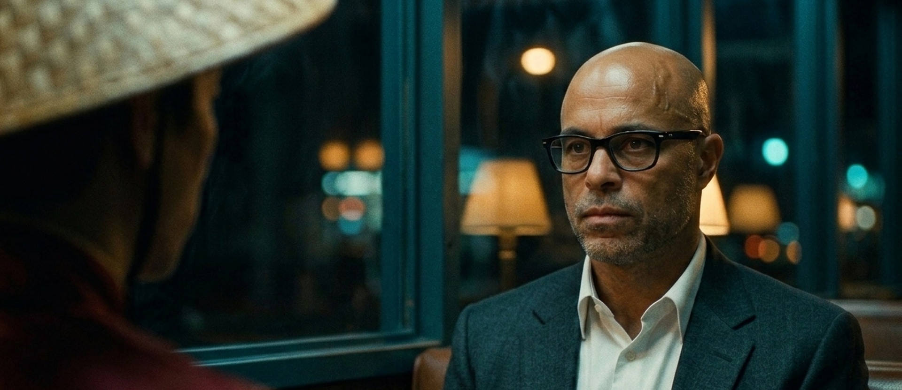
HT2_03 · damon (infinitetalk)
Keyframe: ht2_damon_ots.jpg
Line: "You know the rule, Lieutenant. Never get attached to anything you're not willing to walk out on in thirty seconds flat if you feel the heat around the corner."
Prompt: Photorealistic 1995 35mm gritty Los Angeles midnight diner drama matching the starting frame. Warm amber tungsten booth lamp and deep teal-black midnight glass reflections. Set context: Shallow f/2.2 OTS past Deron's red silk shoulder & conical bamboo hat brim on left onto Damon on right in charcoal wool suit over dark diner booth looking coldly across coffee cup. Use subtle organic 35mm handheld camera breathing with gentle operator micro-movements while maintaining framing distance. Exact hair, bamboo hat, glasses, wardrobe, teapot, vial, and lighting preserved from the starting frame. ONLY the bald Black man on the right side wearing black-rimmed rectangular glasses, a charcoal tailored wool suit jacket, open crisp white dress shirt collar, and short dark trimmed beard actively speaks with natural expressive jaw and lip articulation synced cleanly to the dialogue: "You know the rule, Lieutenant. Never get attached to anything you're not willing to walk out on in thirty seconds flat if you feel the heat around the corner.", holding cool, unhurried heist-leader poise, resting elbows calmly, delivering crisp deliberate head emphasis with steady blinks, finishing with lips closing calmly in deadpan gravity. The blurred foreground listener remains silent with lips comfortably sealed. Real human skin pores, subtle breathing motion, authentic eye blinks, 1990s 35mm film grain.
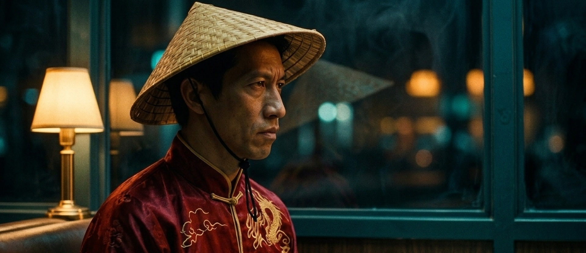
HT2_04 · deron (infinitetalk)
Keyframe: ht2_deron_mcu.jpg
Line: "Brother, I watch plaza security tape ten times! Zero cop car around corner! You sprint straight out back door clutching butt cheeks toward barbecue duck restroom!"
Prompt: Photorealistic 1995 35mm gritty Los Angeles midnight diner drama matching the starting frame. Warm amber tungsten booth lamp and deep teal-black midnight glass reflections. Set context: Gritty MCU of Deron framed left-of-center in bamboo conical hat & ornate red dragon robe beside glowing brass booth lamp with white ceramic teapot. Use subtle organic 35mm handheld camera breathing with gentle operator micro-movements while maintaining framing distance. Exact hair, bamboo hat, glasses, wardrobe, teapot, vial, and lighting preserved from the starting frame. ONLY the middle-aged East Asian man on the left side wearing a woven bamboo conical rice paddy hat and crimson gold-dragon embroidered Chinese silk robe actively speaks with natural expressive jaw and lip articulation synced cleanly to the dialogue: "Brother, I watch plaza security tape ten times! Zero cop car around corner! You sprint straight out back door clutching butt cheeks toward barbecue duck restroom!", tapping an incredulous beat with expressive brow tension, slight incredulous chin lift, and natural breathing shoulders, finishing with lips closing calmly in deadpan gravity. Real human skin pores, subtle breathing motion, authentic eye blinks, 1990s 35mm film grain.
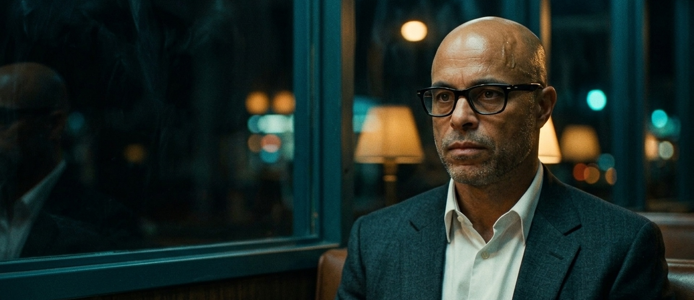
HT2_05 · damon (infinitetalk)
Keyframe: ht2_damon_mcu.jpg
Line: "Tactical regroup. Bad pre-heist shrimp hit me two miles into my morning Aquabike interval. Besides, I survived L.A. County jail—jail, never prison. Stomach pressure doesn't rattle me."
Prompt: Photorealistic 1995 35mm gritty Los Angeles midnight diner drama matching the starting frame. Warm amber tungsten booth lamp and deep teal-black midnight glass reflections. Set context: Gritty MCU of Damon framed right-of-center against teal-black midnight diner windows with warm ceramic coffee mug in lower foreground. Use a steady locked-off cinema camera mounted on a heavy studio tripod with grounded framing. Exact hair, bamboo hat, glasses, wardrobe, teapot, vial, and lighting preserved from the starting frame. ONLY the bald Black man on the right side wearing black-rimmed rectangular glasses, a charcoal tailored wool suit jacket, open crisp white dress shirt collar, and short dark trimmed beard actively speaks with natural expressive jaw and lip articulation synced cleanly to the dialogue: "Tactical regroup. Bad pre-heist shrimp hit me two miles into my morning Aquabike interval. Besides, I survived L.A. County jail—jail, never prison. Stomach pressure doesn't rattle me.", maintaining cold gravelly stoicism with subtle jaw tension, steady blinks, and calm measured delivery, finishing with lips closing calmly in deadpan gravity. Real human skin pores, subtle breathing motion, authentic eye blinks, 1990s 35mm film grain.
HT2_06 · deron (infinitetalk)
Keyframe: ht2_deron_ots.jpg
Line: "Aiya! Grown man robbing armored truck on bad shellfish with no Po Chai Pills in suit pocket! Thirty-second rule useless when plumbing explode in two seconds lah!"
Prompt: Photorealistic 1995 35mm gritty Los Angeles midnight diner drama matching the starting frame. Warm amber tungsten booth lamp and deep teal-black midnight glass reflections. Set context: Shallow f/2.2 OTS past Damon's dark charcoal suit shoulder on right onto Deron on left wearing woven bamboo conical hat & red dragon silk robe leaning toward coffee mug. Use subtle organic 35mm handheld camera breathing with gentle operator micro-movements while maintaining framing distance. Exact hair, bamboo hat, glasses, wardrobe, teapot, vial, and lighting preserved from the starting frame. ONLY the middle-aged East Asian man on the left side wearing a woven bamboo conical rice paddy hat and crimson gold-dragon embroidered Chinese silk robe actively speaks with natural expressive jaw and lip articulation synced cleanly to the dialogue: "Aiya! Grown man robbing armored truck on bad shellfish with no Po Chai Pills in suit pocket! Thirty-second rule useless when plumbing explode in two seconds lah!", shaking his head gently in exasperated fatherly disbelief, lifting his chin slightly under the conical bamboo hat rim with crisp lip articulation, finishing with lips closing calmly in deadpan gravity. The blurred foreground listener remains silent with lips comfortably sealed. Real human skin pores, subtle breathing motion, authentic eye blinks, 1990s 35mm film grain.
HT2_07 · damon (infinitetalk)
Keyframe: ht2_damon_ots.jpg
Line: "My system is fine, Deron. Pure swim, pure bike, no run. Zero carbs, cold black coffee, total control."
Prompt: Photorealistic 1995 35mm gritty Los Angeles midnight diner drama matching the starting frame. Warm amber tungsten booth lamp and deep teal-black midnight glass reflections. Set context: Shallow f/2.2 OTS past Deron's red silk shoulder & conical bamboo hat brim on left onto Damon on right in charcoal wool suit over dark diner booth looking coldly across coffee cup. Use a steady locked-off cinema camera mounted on a heavy studio tripod with grounded framing. Exact hair, bamboo hat, glasses, wardrobe, teapot, vial, and lighting preserved from the starting frame. ONLY the bald Black man on the right side wearing black-rimmed rectangular glasses, a charcoal tailored wool suit jacket, open crisp white dress shirt collar, and short dark trimmed beard actively speaks with natural expressive jaw and lip articulation synced cleanly to the dialogue: "My system is fine, Deron. Pure swim, pure bike, no run. Zero carbs, cold black coffee, total control.", locking cold steady eye contact across the booth with controlled minimal head emphasis and calm stern poise, finishing with lips closing calmly in deadpan gravity. The blurred foreground listener remains silent with lips comfortably sealed. Real human skin pores, subtle breathing motion, authentic eye blinks, 1990s 35mm film grain.
HT2_08 · deron (infinitetalk)
Keyframe: ht2_deron_mcu.jpg
Line: "Wait... I see your face sweating right now. Three ex-wives, LAPD night shift, watching Clippers choke fourth quarter—I know panic look anywhere lah!"
Prompt: Photorealistic 1995 35mm gritty Los Angeles midnight diner drama matching the starting frame. Warm amber tungsten booth lamp and deep teal-black midnight glass reflections. Set context: Gritty MCU of Deron framed left-of-center in bamboo conical hat & ornate red dragon robe beside glowing brass booth lamp with white ceramic teapot. Use subtle organic 35mm handheld camera breathing with gentle operator micro-movements while maintaining framing distance. Exact hair, bamboo hat, glasses, wardrobe, teapot, vial, and lighting preserved from the starting frame. ONLY the middle-aged East Asian man on the left side wearing a woven bamboo conical rice paddy hat and crimson gold-dragon embroidered Chinese silk robe actively speaks with natural expressive jaw and lip articulation synced cleanly to the dialogue: "Wait... I see your face sweating right now. Three ex-wives, LAPD night shift, watching Clippers choke fourth quarter—I know panic look anywhere lah!", narrowing his eyes analytically as he leans toward the warm brass lamp, tilting his head with urgent detective curiosity, finishing with lips closing calmly in deadpan gravity. Real human skin pores, subtle breathing motion, authentic eye blinks, 1990s 35mm film grain.
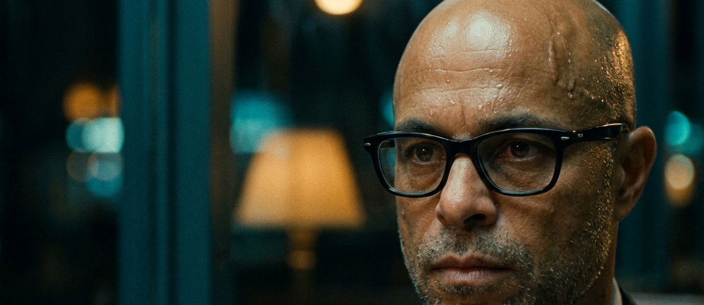
HT2_09 · damon (infinitetalk)
Keyframe: ht2_damon_cu.jpg
Line: "Then explain why you're sitting across from me drinking oolong tea at midnight instead of calling a SWAT perimeter."
Prompt: Photorealistic 1995 35mm gritty Los Angeles midnight diner drama matching the starting frame. Warm amber tungsten booth lamp and deep teal-black midnight glass reflections. Set context: Tight intense 35mm CU of Damon framed right against shadowed diner glass, beaded temple sweat in harsh amber-teal contrast. Use a steady locked-off cinema camera mounted on a heavy studio tripod with grounded framing. Exact hair, bamboo hat, glasses, wardrobe, teapot, vial, and lighting preserved from the starting frame. ONLY the bald Black man on the right side wearing black-rimmed rectangular glasses, a charcoal tailored wool suit jacket, open crisp white dress shirt collar, and short dark trimmed beard actively speaks with natural expressive jaw and lip articulation synced cleanly to the dialogue: "Then explain why you're sitting across from me drinking oolong tea at midnight instead of calling a SWAT perimeter.", holding tight shadowed composure with slight jaw clench, cold focused gaze, and steady measured articulation, finishing with lips closing calmly in deadpan gravity. Real human skin pores, subtle breathing motion, authentic eye blinks, 1990s 35mm film grain.
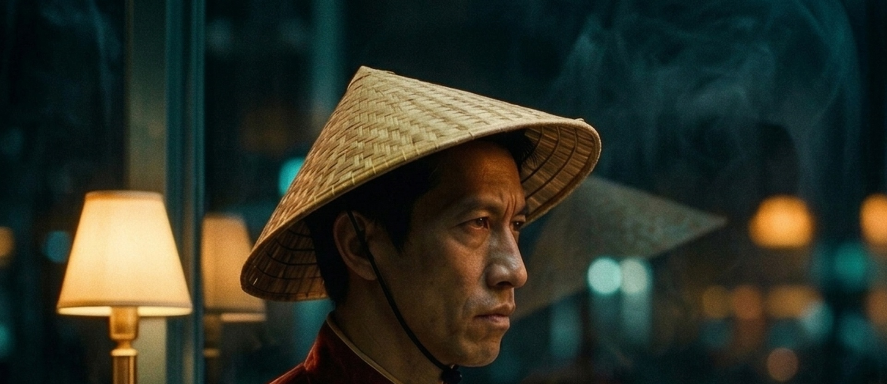
HT2_10 · deron (infinitetalk)
Keyframe: ht2_deron_cu.jpg
Line: "Because I am NOT putting a cramping man in back seat of my patrol cruiser! Last suspect blow out leather upholstery—city make me scrub it myself!"
Prompt: Photorealistic 1995 35mm gritty Los Angeles midnight diner drama matching the starting frame. Warm amber tungsten booth lamp and deep teal-black midnight glass reflections. Set context: Tight intense 35mm CU of Deron framed left under bamboo conical hat rim and collar of red dragon silk robe staring intently across table. Use subtle organic 35mm handheld camera breathing with gentle operator micro-movements while maintaining framing distance. Exact hair, bamboo hat, glasses, wardrobe, teapot, vial, and lighting preserved from the starting frame. ONLY the middle-aged East Asian man on the left side wearing a woven bamboo conical rice paddy hat and crimson gold-dragon embroidered Chinese silk robe actively speaks with natural expressive jaw and lip articulation synced cleanly to the dialogue: "Because I am NOT putting a cramping man in back seat of my patrol cruiser! Last suspect blow out leather upholstery—city make me scrub it myself!", dropping into urgent, frustrated detective conviction, leaning forward subtly with sharp brow emphasis and clear enunciated cadence, finishing with lips closing calmly in deadpan gravity. Real human skin pores, subtle breathing motion, authentic eye blinks, 1990s 35mm film grain.
HT2_11 · damon (infinitetalk)
Keyframe: ht2_damon_ots.jpg
Line: "Smart detective. Because if you get between me and an open highway—or an open bathroom—we both know how the night ends."
Prompt: Photorealistic 1995 35mm gritty Los Angeles midnight diner drama matching the starting frame. Warm amber tungsten booth lamp and deep teal-black midnight glass reflections. Set context: Shallow f/2.2 OTS past Deron's red silk shoulder & conical bamboo hat brim on left onto Damon on right in charcoal wool suit over dark diner booth looking coldly across coffee cup. Use a steady locked-off cinema camera mounted on a heavy studio tripod with grounded framing. Exact hair, bamboo hat, glasses, wardrobe, teapot, vial, and lighting preserved from the starting frame. ONLY the bald Black man on the right side wearing black-rimmed rectangular glasses, a charcoal tailored wool suit jacket, open crisp white dress shirt collar, and short dark trimmed beard actively speaks with natural expressive jaw and lip articulation synced cleanly to the dialogue: "Smart detective. Because if you get between me and an open highway—or an open bathroom—we both know how the night ends.", holding ruthless calm authority across the coffee cup, lifting his chin subtly with cold poise and deliberate lip sync, finishing with lips closing calmly in deadpan gravity. The blurred foreground listener remains silent with lips comfortably sealed. Real human skin pores, subtle breathing motion, authentic eye blinks, 1990s 35mm film grain.
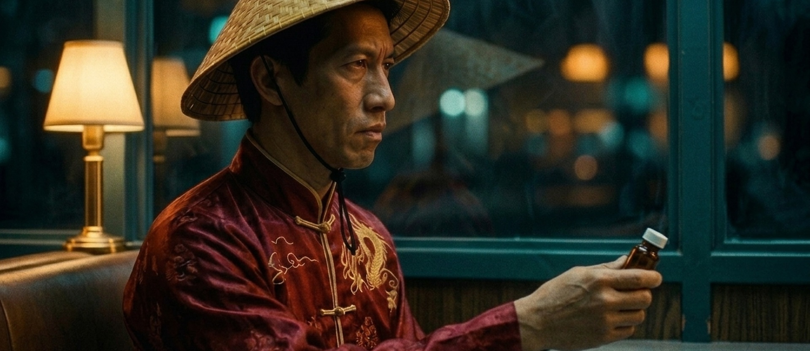
HT2_12 · deron (infinitetalk)
Keyframe: ht2_deron_offer.jpg
Line: "Listen carefully, Damon. Take these two tiny brown herbal pellets with hot tea right now. I give you thirty-second head start out back alley."
Prompt: Photorealistic 1995 35mm gritty Los Angeles midnight diner drama matching the starting frame. Warm amber tungsten booth lamp and deep teal-black midnight glass reflections. Set context: Derived from HT2_DERON_MCU: solemn Deron in bamboo conical hat and red gold-dragon robe reaching forward to offer the tiny brown glass vial of Po Chai Pills above the formica table edge. Use a smooth measured linear cinema push-in on dolly rails heightening psychological intensity. Exact hair, bamboo hat, glasses, wardrobe, teapot, vial, and lighting preserved from the starting frame. ONLY the middle-aged East Asian man on the left side wearing a woven bamboo conical rice paddy hat and crimson gold-dragon embroidered Chinese silk robe actively speaks with natural expressive jaw and lip articulation synced cleanly to the dialogue: "Listen carefully, Damon. Take these two tiny brown herbal pellets with hot tea right now. I give you thirty-second head start out back alley.", leaning closer with earnest tactical warning, slight head nod toward the small brown glass vial held calmly in view, and focused grave delivery, finishing with lips closing calmly in deadpan gravity. Real human skin pores, subtle breathing motion, authentic eye blinks, 1990s 35mm film grain.
HT2_13 · damon (infinitetalk)
Keyframe: ht2_damon_cu.jpg
Line: "I don't take medicine from Robbery-Homicide. Keep your vial. My core holds."
Prompt: Photorealistic 1995 35mm gritty Los Angeles midnight diner drama matching the starting frame. Warm amber tungsten booth lamp and deep teal-black midnight glass reflections. Set context: Tight intense 35mm CU of Damon framed right against shadowed diner glass, beaded temple sweat in harsh amber-teal contrast. Use a steady locked-off cinema camera mounted on a heavy studio tripod with grounded framing. Exact hair, bamboo hat, glasses, wardrobe, teapot, vial, and lighting preserved from the starting frame. ONLY the bald Black man on the right side wearing black-rimmed rectangular glasses, a charcoal tailored wool suit jacket, open crisp white dress shirt collar, and short dark trimmed beard actively speaks with natural expressive jaw and lip articulation synced cleanly to the dialogue: "I don't take medicine from Robbery-Homicide. Keep your vial. My core holds.", maintaining flint-hard refusal with cold downward-set lips at completion, subtle jaw shift, and unwavering gaze, finishing with lips closing calmly in deadpan gravity. Real human skin pores, subtle breathing motion, authentic eye blinks, 1990s 35mm film grain.
HT2_14 · deron (infinitetalk)
Keyframe: ht2_deron_cu.jpg
Line: "Your stomach gurgling louder than broken Honda transmission, idiot! You got maybe ten seconds before whole booth become hazardous waste site!"
Prompt: Photorealistic 1995 35mm gritty Los Angeles midnight diner drama matching the starting frame. Warm amber tungsten booth lamp and deep teal-black midnight glass reflections. Set context: Tight intense 35mm CU of Deron framed left under bamboo conical hat rim and collar of red dragon silk robe staring intently across table. Use subtle organic 35mm handheld camera breathing with gentle operator micro-movements while maintaining framing distance. Exact hair, bamboo hat, glasses, wardrobe, teapot, vial, and lighting preserved from the starting frame. ONLY the middle-aged East Asian man on the left side wearing a woven bamboo conical rice paddy hat and crimson gold-dragon embroidered Chinese silk robe actively speaks with natural expressive jaw and lip articulation synced cleanly to the dialogue: "Your stomach gurgling louder than broken Honda transmission, idiot! You got maybe ten seconds before whole booth become hazardous waste site!", widening his eyes slightly under the bamboo hat brim with urgent warning cadence and brisk expressive jaw articulation, finishing with lips closing calmly in deadpan gravity. Real human skin pores, subtle breathing motion, authentic eye blinks, 1990s 35mm film grain.
HT2_15 · damon (infinitetalk)
Keyframe: ht2_damon_cu.jpg
Line: "Now that you brought up the clock… if I have to choose between this suit and making that diner hallway, brother, I do not hesitate."
Prompt: Photorealistic 1995 35mm gritty Los Angeles midnight diner drama matching the starting frame. Warm amber tungsten booth lamp and deep teal-black midnight glass reflections. Set context: Tight intense 35mm CU of Damon framed right against shadowed diner glass, beaded temple sweat in harsh amber-teal contrast. Use a smooth measured linear cinema push-in on dolly rails heightening psychological intensity. Exact hair, bamboo hat, glasses, wardrobe, teapot, vial, and lighting preserved from the starting frame. ONLY the bald Black man on the right side wearing black-rimmed rectangular glasses, a charcoal tailored wool suit jacket, open crisp white dress shirt collar, and short dark trimmed beard actively speaks with natural expressive jaw and lip articulation synced cleanly to the dialogue: "Now that you brought up the clock… if I have to choose between this suit and making that diner hallway, brother, I do not hesitate.", holding icy solemn unamused conviction under the slow dolly push, tense flat lips, grave furrowed brow, and deliberate stressed beats, finishing with lips closing calmly in deadpan gravity. Real human skin pores, subtle breathing motion, authentic eye blinks, 1990s 35mm film grain.
HT2_16 · deron (infinitetalk)
Keyframe: ht2_deron_cu.jpg
Line: "Hope you remember four-digit bathroom door code, lah! Waitress locked men's room at midnight."
Prompt: Photorealistic 1995 35mm gritty Los Angeles midnight diner drama matching the starting frame. Warm amber tungsten booth lamp and deep teal-black midnight glass reflections. Set context: Tight intense 35mm CU of Deron framed left under bamboo conical hat rim and collar of red dragon silk robe staring intently across table. Use a steady locked-off cinema camera mounted on a heavy studio tripod with grounded framing. Exact hair, bamboo hat, glasses, wardrobe, teapot, vial, and lighting preserved from the starting frame. ONLY the middle-aged East Asian man on the left side wearing a woven bamboo conical rice paddy hat and crimson gold-dragon embroidered Chinese silk robe actively speaks with natural expressive jaw and lip articulation synced cleanly to the dialogue: "Hope you remember four-digit bathroom door code, lah! Waitress locked men's room at midnight.", giving a razor-dry deadpan warning glare under the bamboo hat rim, tense unamused flat mouth, and calm grave brow posture, finishing with lips closing calmly in deadpan gravity. Real human skin pores, subtle breathing motion, authentic eye blinks, 1990s 35mm film grain.
HT2_17 · damon (infinitetalk)
Keyframe: ht2_damon_cu.jpg
Line: "Word. Wait—whose keypad?"
Prompt: Photorealistic 1995 35mm gritty Los Angeles midnight diner drama matching the starting frame. Warm amber tungsten booth lamp and deep teal-black midnight glass reflections. Set context: Tight intense 35mm CU of Damon framed right against shadowed diner glass, beaded temple sweat in harsh amber-teal contrast. Use a steady locked-off cinema camera mounted on a heavy studio tripod with grounded framing. Exact hair, bamboo hat, glasses, wardrobe, teapot, vial, and lighting preserved from the starting frame. ONLY the bald Black man on the right side wearing black-rimmed rectangular glasses, a charcoal tailored wool suit jacket, open crisp white dress shirt collar, and short dark trimmed beard actively speaks with natural expressive jaw and lip articulation synced cleanly to the dialogue: "Word. Wait—whose keypad?", blinking a tight cold beat of sudden realization with subtle parted-lip hesitation before snapping cleanly shut, finishing with lips closing calmly in deadpan gravity. Real human skin pores, subtle breathing motion, authentic eye blinks, 1990s 35mm film grain.
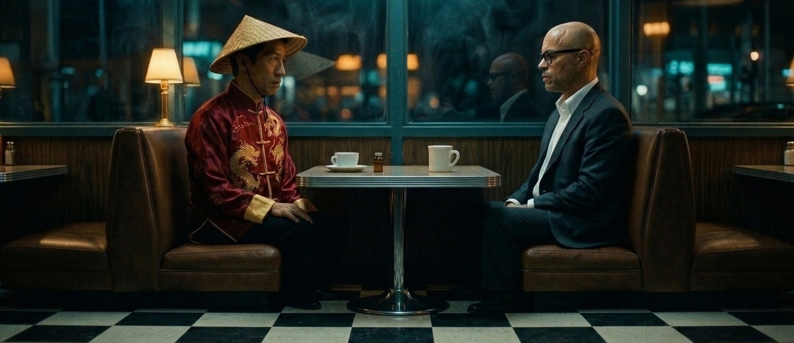
HT2_18 · fx (4.0s)
Keyframe: ht2_climax_start.jpg
Line: ""
Prompt: Photorealistic 1995 35mm gritty Los Angeles midnight diner comedy-drama practical-FX shot matching the starting frame and ending frame. Frame 1 opens cleanly across the spotless, dry midnight formica diner booth with Damon in charcoal wool suit seated on the right and Deron in red gold-dragon silk robe and woven bamboo conical hat seated on the left above a completely clean black-and-white checkered floor. Damon keeps a stone-cold stoic poker face above the formica tabletop as a catastrophic pressurized wave of thick, chunky, glossy, disgusting dark-brown liquid diarrhea surges violently forward underneath the table across the checkered floor toward Deron's booth bench, splashing chunky glossy dark-brown puddles beneath the pedestal leg while both cups, teapot, and small glass vial stay untouched on top. Use a steady locked-off cinema camera mounted on a heavy studio tripod with grounded framing. Authentic practical 35mm film physics, fluid hydrodynamic liquid splash, crisp 35mm film grain.
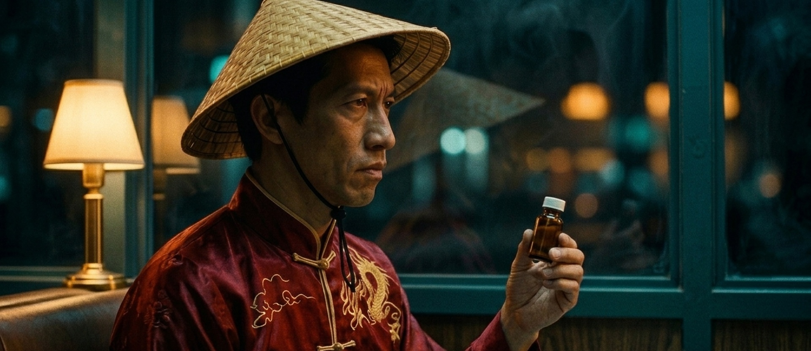
HT2_19 · deron (infinitetalk)
Keyframe: ht2_deron_post.jpg
Line: "Aiya... thirty seconds flat, huh? Still more composure than Clippers fourth-quarter offense. Cashier! Bring hot water and large bucket mop lah!"
Prompt: Photorealistic 1995 35mm gritty Los Angeles midnight diner drama matching the starting frame. Warm amber tungsten booth lamp and deep teal-black midnight glass reflections. Set context: Derived from HT2_DERON_MCU: composed Deron holding up tiny glass vial of Po Chai Pills beside speckled booth edge. Use subtle organic 35mm handheld camera breathing with gentle operator micro-movements while maintaining framing distance. Exact hair, bamboo hat, glasses, wardrobe, teapot, vial, and lighting preserved from the starting frame. ONLY the middle-aged East Asian man on the left side wearing a woven bamboo conical rice paddy hat and crimson gold-dragon embroidered Chinese silk robe actively speaks with natural expressive jaw and lip articulation synced cleanly to the dialogue: "Aiya... thirty seconds flat, huh? Still more composure than Clippers fourth-quarter offense. Cashier! Bring hot water and large bucket mop lah!", shaking his head calmly with weary dry humor, tilting the small brown glass vial slightly while speaking in unhurried deadpan cadence, finishing with lips closing calmly in deadpan gravity. Real human skin pores, subtle breathing motion, authentic eye blinks, 1990s 35mm film grain.
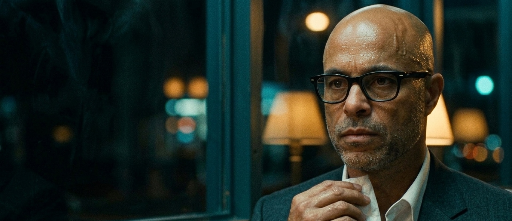
HT2_20 · damon (infinitetalk)
Keyframe: ht2_damon_post.jpg
Line: "Tell the waitress to keep the tip. Next job, I'm sticking to sealed hydrogels."
Prompt: Photorealistic 1995 35mm gritty Los Angeles midnight diner drama matching the starting frame. Warm amber tungsten booth lamp and deep teal-black midnight glass reflections. Set context: Derived from HT2_DAMON_CU: pale, sweating Damon dabbing his white shirt collar calmly with a diner paper napkin. Use a steady locked-off cinema camera mounted on a heavy studio tripod with grounded framing. Exact hair, bamboo hat, glasses, wardrobe, teapot, vial, and lighting preserved from the starting frame. ONLY the bald Black man on the right side wearing black-rimmed rectangular glasses, a charcoal tailored wool suit jacket, open crisp white dress shirt collar, and short dark trimmed beard actively speaks with natural expressive jaw and lip articulation synced cleanly to the dialogue: "Tell the waitress to keep the tip. Next job, I'm sticking to sealed hydrogels.", sweating subtly under the brass diner light, dabbing his shirt collar calmly with grave stoic dignity and clean final lip closure, finishing with lips closing calmly in deadpan gravity. Real human skin pores, subtle breathing motion, authentic eye blinks, 1990s 35mm film grain.